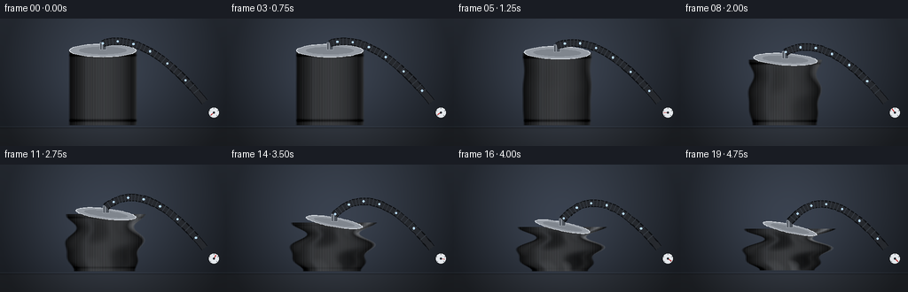
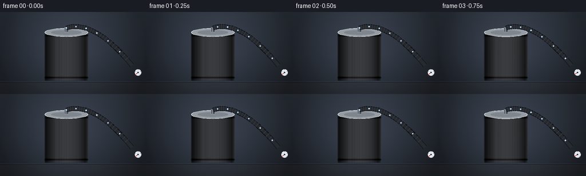
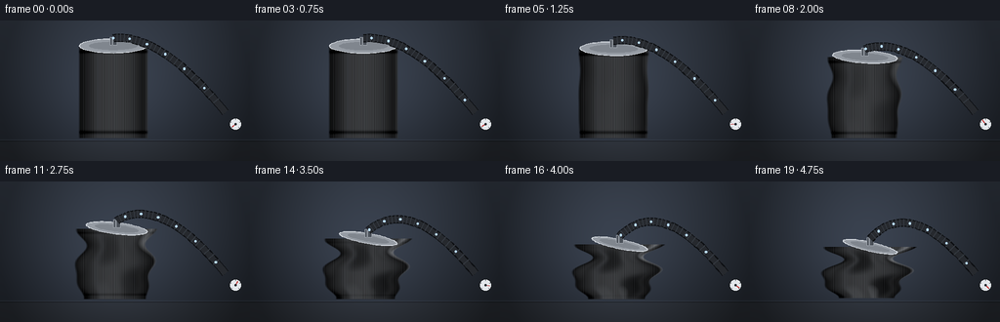
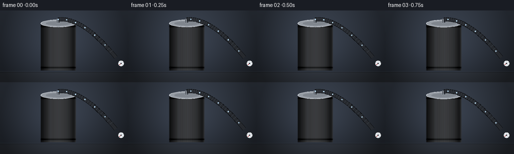

CODING AGENTS AS PIXEL WORLD MODELS
traex/Seed-2.1-Pro-0915 · phygen_017
点击播放 · 原生 RGB 像素
逐轮保存的候选
回放视频、检查图与代码变化。
每份候选均可单独播放。实际图片检查记录在下方工具轨迹中。
候选 01播放与检查图
点击播放 · 原生 RGB 像素


展开代码变化
--- 上一保存版本
+++ 本次保存版本
@@ -0,0 +1,271 @@
+"""Procedural RGB video: air extracted from a sealed aluminum can.
+
+Renders 20 frames (256x144, 4 fps) entirely with numpy + PIL: a parametric
+aluminum can whose cylindrical shell progressively buckles under vacuum,
+connected by a ribbed hose to a small vacuum pump with a pressure gauge.
+"""
+import json
+from pathlib import Path
+
+import numpy as np
+from PIL import Image, ImageDraw, ImageFilter
+
+import artifact_io
+
+ROOT = Path(__file__).parent
+SPEC = json.loads((ROOT / "task_spec.json").read_text())
+W, H, N, FPS = SPEC["width"], SPEC["height"], SPEC["frames"], SPEC["fps"]
+SS = 2 # supersampling factor
+FW, FH = W * SS, H * SS
+
+# ---------------------------------------------------------------- palette
+WALL_TOP = np.array([52, 59, 70], float)
+WALL_BOT = np.array([35, 40, 48], float)
+FLOOR_TOP = np.array([40, 44, 50], float)
+FLOOR_BOT = np.array([22, 24, 28], float)
+METAL = np.array([181, 186, 193], float)
+METAL_DARK = np.array([96, 102, 110], float)
+HOSE_COL = np.array([26, 29, 34], float)
+PUMP_COL = np.array([58, 64, 72], float)
+TABLE_Y = 246
+
+
+def smoothstep(e0, e1, x):
+ x = np.clip((x - e0) / (e1 - e0), 0.0, 1.0)
+ return x * x * (3 - 2 * x)
+
+
+def make_background():
+ bg = np.zeros((FH, FW, 3), float)
+ ys = np.linspace(0, 1, FH)[:, None]
+ wall = WALL_TOP[None, :] * (1 - ys) + WALL_BOT[None, :] * ys
+ floor = FLOOR_TOP[None, :] * (1 - ys) + FLOOR_BOT[None, :] * ys
+ bg[:] = wall[:, None, :]
+ bg[TABLE_Y:] = floor[: FH - TABLE_Y, None, :]
+ # soft radial glow behind the can
+ yy, xx = np.mgrid[0:FH, 0:FW]
+ glow = np.exp(-(((xx - 230) / 170.0) ** 2 + ((yy - 150) / 150.0) ** 2))
+ bg += glow[..., None] * np.array([14, 16, 20])
+ # vignette
+ vig = 1 - 0.35 * (((xx - FW / 2) / (FW / 2)) ** 2 + ((yy - FH / 2) / FH) ** 2)
+ bg *= np.clip(vig, 0.65, 1.0)[..., None]
+ # table edge highlight
+ bg[TABLE_Y:TABLE_Y + 2] *= 0.7
+ bg[TABLE_Y - 2:TABLE_Y] += np.array([10, 11, 13])
+ return np.clip(bg, 0, 255)
+
+
+BG = make_background()
+
+
+def render_can(img, p):
+ """Render the buckling can directly into float image img (SS resolution)."""
+ c = smoothstep(0.12, 1.0, p) # collapse progress
+ # violent suction jitter during the late phase
+ shake = smoothstep(0.55, 1.0, p)
+ jx = shake * 1.6 * np.sin(p * 46.0) + 0.5 * c * np.sin(p * 23.0)
+ jy = shake * 1.1 * np.sin(p * 53.0 + 1.7)
+
+ cx = 232 + jx
+ base_y = TABLE_Y - 6 + jy
+ r = 78.0
+ h0 = 168.0
+ height = h0 * (1 - 0.44 * c)
+ amp = 0.34 * c # dent depth
+ tilt = 16.0 * c
+
+ y0 = int(base_y - height - 24)
+ y1 = int(base_y + 4)
+ x0, x1 = int(cx - r * 1.25 - 6), int(cx + r * 1.25 + 24)
+ x0, x1 = max(0, x0), min(FW, x1)
+ y0, y1 = max(0, y0), min(FH, y1)
+
+ ys, xs = np.mgrid[y0:y1, x0:x1]
+ v = (base_y - ys) / height
+ valid = (v >= 0) & (v <= 1)
+
+ # buckling silhouette: pinches and a leaning centerline
+ sv = np.clip(v, 0, 1)
+ pinch = (0.60 * np.sin(3 * np.pi * sv + 0.7)
+ + 0.40 * np.sin(5 * np.pi * sv + 2.1))
+ w_scale = (1 + 0.08 * c) * (1 - amp * pinch)
+ w_scale = np.maximum(w_scale, 0.42)
+ xc_v = cx + tilt * sv * sv + amp * r * 0.22 * np.sin(2 * np.pi * 1.7 * sv + 1.3)
+ half_w = r * w_scale
+ u = (xs - xc_v) / half_w
+ inside = valid & (np.abs(u) <= 1.0)
+
+ theta = np.arcsin(np.clip(u, -1, 1))
+ # radial fold field on the cylinder shell
+ phi1 = 4.0 * sv + 0.8
+ phi2 = -6.0 * sv + 2.0
+ g = 0.62 * np.cos(3 * theta + phi1) + 0.38 * np.cos(5 * theta + phi2)
+ rho = 1.0 + amp * g
+ rho_t = amp * (-1.86 * np.sin(3 * theta + phi1)
+ - 1.90 * np.sin(5 * theta + phi2))
+ rho_v = amp * (-2.48 * np.sin(3 * theta + phi1)
+ + 2.28 * np.sin(5 * theta + phi2))
+
+ # surface normal from derivatives of P(theta, v) = (r*rho*sin, h*v, r*rho*cos)
+ a1 = rho_t * np.sin(theta) + rho * np.cos(theta)
+ a3 = rho_t * np.cos(theta) - rho * np.sin(theta)
+ b1, b2, b3 = rho_v * np.sin(theta), height / r, rho_v * np.cos(theta)
+ nx = a3 * b2
+ ny = a3 * b1 - a1 * b3
+ nz = -(a1 * b2)
+ norm = np.sqrt(nx * nx + ny * ny + nz * nz) + 1e-9
+ nx, ny, nz = nx / norm, ny / norm, nz / norm
+ nz = -np.abs(nz) # face the viewer
+
+ L = np.array([-0.45, 0.55, 0.70])
+ L /= np.linalg.norm(L)
+ V = np.array([0.0, 0.0, 1.0])
+ hv = L + V
+ hv /= np.linalg.norm(hv)
+ ndl = np.maximum(0, nx * L[0] + ny * L[1] + nz * L[2])
+ ndh = np.maximum(0, nx * hv[0] + ny * hv[1] + nz * hv[2])
+
+ shade = 0.32 + 0.78 * ndl
+ spec = 0.85 * ndh ** 26
+ # brushed aluminum micro texture
+ brush = 0.035 * np.sin(xs * 1.7 + 2.0 * np.sin(xs * 0.31))
+ # rim darkening and fold valleys / ridges
+ rim = (1 - np.abs(np.cos(theta)) ** 2) * 0.28
+ valley = smoothstep(0.15, 1.0, -g) * amp * 0.55
+ ridge = smoothstep(0.4, 1.0, g) * amp * 0.18
+ # factory crimp rings fade as the shell collapses
+ crimp = (np.exp(-((sv - 0.06) / 0.018) ** 2)
+ + np.exp(-((sv - 0.94) / 0.018) ** 2)) * (1 - c) * 0.18
+
+ light = shade + spec + brush - rim - valley + ridge - crimp
+ col = METAL[None, None, :] * light[..., None]
+ col = col * (1 - valley[..., None] * 0.35) + METAL_DARK * (valley[..., None] * 0.35)
+ # soft vertical reflection stripes of the room
+ stripe1 = np.exp(-((u + 0.45) / 0.10) ** 2) * 0.22
+ stripe2 = np.exp(-((u - 0.55) / 0.16) ** 2) * 0.10
+ col += (stripe1 + stripe2)[..., None] * np.array([26, 28, 32])
+
+ # edge anti-aliasing
+ alpha = np.clip((1 - np.abs(u)) / 0.06, 0, 1) * inside
+ alpha3 = alpha[..., None]
+ img[y0:y1, x0:x1] = img[y0:y1, x0:x1] * (1 - alpha3) + col * alpha3
+
+ top_x = xc_v[np.clip(int(base_y - height) - y0, 0, ys.shape[0] - 1),
+ np.clip(xs.shape[1] // 2, 0, xs.shape[1] - 1)]
+ return float(top_x), base_y - height, half_w, c
+
+
+def draw_rotated_ellipse(draw, center, rx, ry, angle, fill, outline=None, width=1):
+ pts = []
+ ca, sa = np.cos(angle), np.sin(angle)
+ for t in np.linspace(0, 2 * np.pi, 64, endpoint=False):
+ x, y = rx * np.cos(t), ry * np.sin(t)
+ pts.append((center[0] + ca * x - sa * y,
+ center[1] + sa * x + ca * y))
+ draw.polygon(pts, fill=fill)
+ if outline:
+ draw.line(pts + [pts[0]], fill=outline, width=width)
+
+
+def hose_point(s, n0, n1, ctrl):
+ """Quadratic bezier from nozzle n0 to pump n1."""
+ return ((1 - s) ** 2 * np.array(n0) + 2 * (1 - s) * s * np.array(ctrl)
+ + s ** 2 * np.array(n1))
+
+
+def render_frame(i):
+ p = i / (N - 1)
+ img = BG.copy()
+
+ # contact shadow under the can
+ pil = Image.fromarray(np.clip(img, 0, 255).astype(np.uint8)).convert("RGBA")
+ shd = Image.new("RGBA", (FW, FH), (0, 0, 0, 0))
+ sd = ImageDraw.Draw(shd)
+ shrink = 1 - 0.3 * smoothstep(0.12, 1, p)
+ sd.ellipse([232 - 92 * shrink, TABLE_Y - 16, 232 + 92 * shrink, TABLE_Y + 12],
+ fill=(0, 0, 0, 120))
+ shd = shd.filter(ImageFilter.GaussianBlur(6))
+ pil = Image.alpha_composite(pil, shd)
+
+ # pump body (static) with gauge animated later
+ pd = ImageDraw.Draw(pil)
+ pd.rounded_rectangle([452, 188, 506, TABLE_Y + 2], 6,
+ fill=tuple(PUMP_COL.astype(int)) + (255,),
+ outline=(30, 33, 38, 255), width=2)
+ pd.rectangle([452, 182, 470, 196], fill=(44, 48, 54, 255)) # hose port
+ pd.ellipse([458, 226, 466, 234], fill=(90, 220, 120, 255)) # power LED
+
+ top_x, top_y, half_w, c = render_can(img, p)
+ pil = Image.fromarray(np.clip(img, 0, 255).astype(np.uint8)).convert("RGBA")
+ d = ImageDraw.Draw(pil)
+
+ # ---- lid (tilts and narrows as the can collapses)
+ angle = 0.22 * c
+ lid_c = (top_x, top_y)
+ lid_rx = float(np.mean(half_w[-max(1, int(half_w.shape[0] * 0.05)), :])) * 0.96
+ lid_ry = 15 * (1 - 0.35 * c)
+ draw_rotated_ellipse(d, lid_c, lid_rx, lid_ry, angle,
+ fill=(150, 156, 164, 255), outline=(214, 219, 225, 255), width=2)
+ draw_rotated_ellipse(d, lid_c, lid_rx * 0.72, lid_ry * 0.55, angle,
+ fill=(128, 134, 142, 255))
+ # nozzle / vacuum fitting on the lid
+ nx, ny = lid_c[0], lid_c[1] - 6
+ d.rectangle([nx - 7, ny - 12, nx + 7, ny + 4], fill=(74, 80, 88, 255),
+ outline=(170, 176, 184, 255))
+ d.rectangle([nx - 3, ny - 12, nx - 1, ny + 4], fill=(140, 146, 154, 255))
+
+ # ---- ribbed hose from nozzle to the pump port
+ n0 = (nx, ny - 10)
+ n1 = (461, 188)
+ ctrl = (330, 26)
+ pts = [tuple(hose_point(s, n0, n1, ctrl)) for s in np.linspace(0, 1, 40)]
+ d.line(pts, fill=(12, 14, 17, 255), width=17, joint="curve")
+ d.line(pts, fill=tuple((HOSE_COL + 12).astype(int)) + (255,), width=13, joint="curve")
+ for k in range(1, 26):
+ s = k / 27.0
+ q = hose_point(s, n0, n1, ctrl)
+ q2 = hose_point(min(1, s + 0.01), n0, n1, ctrl)
+ tangent = np.array(q2) - np.array(q)
+ perp = np.array([-tangent[1], tangent[0]])
+ perp /= (np.linalg.norm(perp) + 1e-9)
+ a = q - perp * 7.5
+ b = q + perp * 7.5
+ d.line([tuple(a), tuple(b)], fill=(52, 57, 64, 255), width=2)
+
+ # ---- air particles streaming toward the pump
+ for k in range(6):
+ s = (p * 1.6 + k / 6.0) % 1.0
+ q = hose_point(s, n0, n1, ctrl)
+ rad = 2.2
+ alpha = int(190 * np.sin(np.pi * s))
+ d.ellipse([q[0] - rad, q[1] - rad, q[0] + rad, q[1] + rad],
+ fill=(188, 222, 255, max(40, alpha)))
+
+ # ---- pressure gauge: needle sweeps as vacuum grows
+ gx, gy, gr = 482, 212, 13
+ d.ellipse([gx - gr, gy - gr, gx + gr, gy + gr],
+ fill=(228, 232, 236, 255), outline=(24, 27, 31, 255), width=2)
+ vac = smoothstep(0.05, 0.95, p)
+ for k in range(5):
+ a = np.pi * 0.75 + k / 4.0 * np.pi * 1.5
+ d.line([(gx + np.cos(a) * (gr - 4), gy + np.sin(a) * (gr - 4)),
+ (gx + np.cos(a) * (gr - 1), gy + np.sin(a) * (gr - 1))],
+ fill=(40, 44, 50, 255), width=1)
+ a = np.pi * 0.75 + vac * np.pi * 1.5
+ d.line([(gx, gy), (gx + np.cos(a) * (gr - 4), gy + np.sin(a) * (gr - 4))],
+ fill=(190, 40, 40, 255), width=2)
+ d.ellipse([gx - 2, gy - 2, gx + 2, gy + 2], fill=(40, 44, 50, 255))
+
+ frame = np.asarray(pil.convert("RGB"), dtype=np.uint8)
+ frame = np.asarray(Image.fromarray(frame).resize((W, H), Image.Resampling.LANCZOS))
+ return frame
+
+
+def main():
+ frames = np.stack([render_frame(i) for i in range(N)], axis=0)
+ artifact_io.save(frames, ROOT)
+ print(f"saved {N} frames {W}x{H} @ {FPS} fps: pixels.npz, frames/, index.html")
+
+
+if __name__ == "__main__":
+ main()
候选 02播放与检查图
点击播放 · 原生 RGB 像素


展开代码变化
--- 上一保存版本
+++ 本次保存版本
@@ -68,8 +68,8 @@
cx = 232 + jx
base_y = TABLE_Y - 6 + jy
- r = 78.0
- h0 = 168.0
+ r = 72.0
+ h0 = 188.0
height = h0 * (1 - 0.44 * c)
amp = 0.34 * c # dent depth
tilt = 16.0 * c
@@ -182,7 +182,7 @@
shd = Image.new("RGBA", (FW, FH), (0, 0, 0, 0))
sd = ImageDraw.Draw(shd)
shrink = 1 - 0.3 * smoothstep(0.12, 1, p)
- sd.ellipse([232 - 92 * shrink, TABLE_Y - 16, 232 + 92 * shrink, TABLE_Y + 12],
+ sd.ellipse([232 - 86 * shrink, TABLE_Y - 16, 232 + 86 * shrink, TABLE_Y + 12],
fill=(0, 0, 0, 120))
shd = shd.filter(ImageFilter.GaussianBlur(6))
pil = Image.alpha_composite(pil, shd)
可观测工具轨迹
实际执行的命令与返回图片。
命令 1exit 0
/bin/bash -lc 'ls -la && cat prompt.txt GENERATION_RULES.md task_spec.json'
命令 2exit 0
/bin/bash -lc 'cat artifact_io.py && head -50 player_template.html && python3 -c "import numpy, PIL; print(numpy.__version__, PIL.__version__)"'
命令 3exit 1
/bin/bash -lc 'cd . && time python3 generate.py && ls -la'
命令 4exit 0
/bin/bash -lc 'cd . && time python3 generate.py && ls -la frames | head'
命令 5exit 0
/bin/bash -lc "cd . && python3 - <<'EOF'
import numpy as np
from PIL import Image
chars = \" .:-=+*#%@\"
for fi in [0, 5, 10, 15, 19]:
im = np.asarray(Image.open(f\"frames/{fi:02d}.png\").convert(\"L\"), float)
small = np.asarray(Image.fromarray(im.astype(np.uint8)).resize((72, 30)))
print(f\"--- frame {fi} ---\")
for row in small:
print(\"\".join(chars[min(9, int(v/26))] for v in row))
EOF"命令 6exit 0
/bin/bash -lc "cd . && python3 - <<'EOF'
import numpy as np
from PIL import Image
frames = np.stack([np.asarray(Image.open(f\"frames/{i:02d}.png\")) for i in range(20)])
print(\"shape\", frames.shape, \"range\", frames.min(), frames.max())
# frame-to-frame mean absolute change
for i in range(1, 20):
d = np.abs(frames[i].astype(int) - frames[i-1].astype(int)).mean()
print(f\"delta {i-1:02d}->{i:02d}: {d:6.2f}\", end=\" \")
if i % 4 == 0: print()
print()
# can region stats (final res): can around x 40..190, y 30..120
for fi in [0, 9, 19]:
reg = frames[fi, 30:120, 40:190]
print(f\"frame {fi}: can-region mean RGB {reg.reshape(-1,3).mean(0).round(1)}, max {reg.reshape(-1,3).max(0)}\")
# hose path check at final resolution: quadratic from (116, ~30) to (230,94) ctrl (165,13)
def q(s):
n0=np.array([116.,30.]); n1=np.array([230.,94.]); c=np.array([165.,13.])
return (1-s)**2*n0+2*(1-s)*s*c+s**2*n1
for fi in [0, 19]:
print(f\"frame {fi} hose samples (x,y,RGB):\")
for s in [0.1,0.3,0.5,0.7,0.9]:
x,y = q(s); xi,yi=int(round(x)),int(round(y))
print(\" \", xi, yi, frames[fi, yi, xi])
# distinct colors count (flatness check) and brightness hist
f0 = frames[0]
print(\"unique colors frame0:\", len(np.unique(f0.reshape(-1,3), axis=0)))
print(\"luminance percentiles:\", np.percentile(f0.mean(2), [5,25,50,75,95]).round(1))
EOF"命令 7exit 0
/bin/bash -lc "cd . && python3 - <<'EOF'
import numpy as np
from PIL import Image
frames = np.stack([np.asarray(Image.open(f\"frames/{i:02d}.png\")) for i in range(20)])
# metal mask: bright-ish neutral pixels in left 3/4 of frame
for fi in [0, 4, 9, 14, 19]:
f = frames[fi]
r,g,b = f[...,0].astype(int), f[...,1].astype(int), f[...,2].astype(int)
metal = (r > 110) & (np.abs(r-g) < 18) & (np.abs(g-b) < 18)
metal[:, 200:] = False
ys, xs = np.where(metal)
print(f\"frame {fi:02d}: metal bbox x[{xs.min()},{xs.max()}] y[{ys.min()},{ys.max()}] \"
f\"w={xs.max()-xs.min()+1} h={ys.max()-ys.min()+1} px={metal.sum()}\")
# can-region color richness
reg = frames[0, 30:120, 40:190].reshape(-1,3)
print(\"unique colors in can region frame0:\", len(np.unique(reg, axis=0)))
# gauge needle angle change: inspect red pixels near pump
for fi in [0, 19]:
f = frames[fi].astype(int)
red = (f[...,0] > 130) & (f[...,1] < 90) & (f[...,2] < 90)
ys, xs = np.where(red)
if len(xs):
print(f\"frame {fi}: red needle pixels bbox x[{xs.min()},{xs.max()}] y[{ys.min()},{ys.max()}] n={len(xs)}\")
# air particle count (bluish bright) over frames
for fi in range(0,20,4):
f = frames[fi].astype(int)
ap = (f[...,2] > 200) & (f[...,2] - f[...,0] > 40)
print(f\"frame {fi}: air-particle pixels = {ap.sum()}\")
EOF"命令 8exit 0
/bin/bash -lc "cd . && python3 generate.py && python3 - <<'EOF'
import numpy as np
from PIL import Image
chars = \" .:-=+*#%@\"
for fi in [0, 19]:
im = np.asarray(Image.open(f\"frames/{fi:02d}.png\").convert(\"L\"), float)
small = np.asarray(Image.fromarray(im.astype(np.uint8)).resize((72, 30)))
print(f\"--- frame {fi} ---\")
for row in small:
print(\"\".join(chars[min(9, int(v/26))] for v in row))
frames = np.stack([np.asarray(Image.open(f\"frames/{i:02d}.png\")) for i in range(20)])
deltas = [np.abs(frames[i].astype(int)-frames[i-1].astype(int)).mean() for i in range(1,20)]
print(\"deltas:\", np.round(deltas,2))
r,g,b = frames[...,0].astype(int),frames[...,1].astype(int),frames[...,2].astype(int)
metal = (r>110)&(np.abs(r-g)<18)&(np.abs(g-b)<18); metal[...,200:]=False
for fi in [0,9,19]:
ys,xs=np.where(metal[fi])
print(f\"f{fi}: metal bbox x[{xs.min()},{xs.max()}] y[{ys.min()},{ys.max()}] px={metal[fi].sum()}\")
EOF"保存候选 2 份；完成命令 8 次；可验证图片返回 0 张。原始 API 响应与完整日志保留在本地。